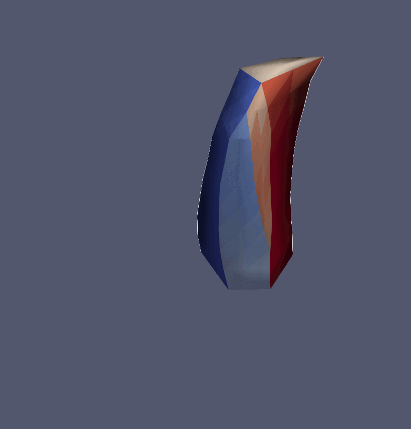
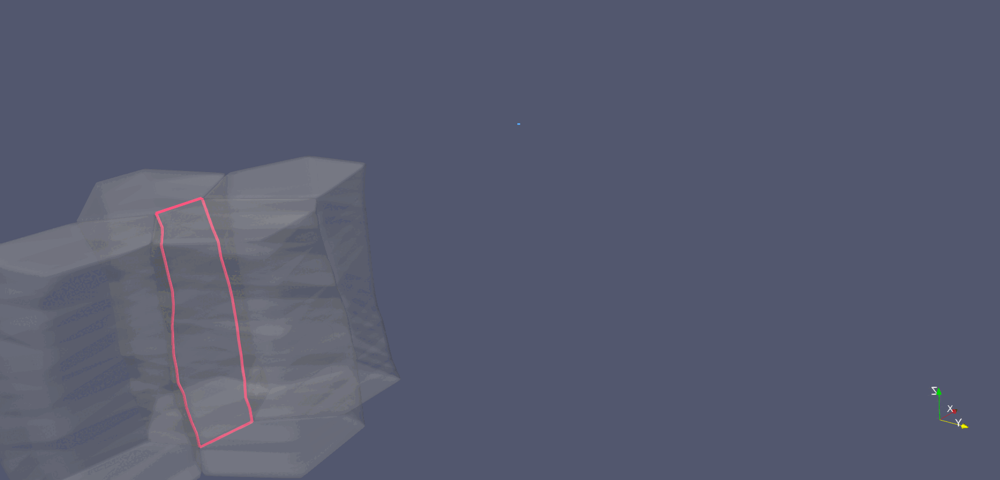

Sassan Ostvar
I study how structure emerges—whether in an embryonic tissue, a clay-based composite, insect wings, or a dataset. My work blends quantitative biology, geometry-aware computing, and a long-standing practice of looking closely at shape. I build open tools (most recently Archimedes) so that researchers, artists, engineers, and naturalists can observe, measure, model, imagine, and create living materials with less guesswork.
Projects

Cell-interface remodeling in mouse neuroepithelial cell

Active morphodynamics of mouse neuroepithelial cell

Cell-interface remodeling in Drosophila germband cells undergoing T1 transition
Using high-resolution z-stack live imaging and the Archimedes pipeline, we track 3D shape changes of thousands of mouse and Drosophila neuroectodermal cells over hours, revealing how cell-shape patterning, cell-interface remodeling, and dynamic packing geometry contribute to epithelial tissue morphogenesis.
News
- 2025-03-14 - Visited UT Austin Physics.
- 2024-12-06 - Presented seminar at the Allen Institute for Brain Science in Seattle.
- 2024-09-13 - Presented at the Society for Developmental Biology Ethel Browne Harvey Postdoctoral Seminar. Watch video
- 2024-08-28 - Presented neuroectodermal morphogenesis work at the Santa Cruz Developmental Biology Meeting (SCDB 24).
- 2024-07-15 - New paper in Current Biology: "E-cadherin tunes tissue mechanical behavior before and during morphogenetic tissue flows" Journal link
- 2024-04-30 - Preprint released: "Cell rearrangement progression along the apical-basal axis is linked with 3-D epithelial tissue structure" bioRxiv
- 2024-04-03 - Presented at APS March Meeting 2024 in Minneapolis. Session link
- 2024-03-03 - Attended APS March Meeting 2024 Tutorial on Topological Soft Matter.
Publications
- Cell & Developmental Biology; 4-D Imaging
- S. Ostvar et al. "Linking cell shapes and cell rearrangements in 3-D in the developing mouse neuroepithelium", 2025, under review, bioRxiv
- E. M. Kusaka* and S. Ostvar* et al. "Tissue structure and mechanics vary along the apical-basal axis of the Drosophila germband epithelium", 2024, under review, bioRxiv (*equal contribution)
- X. Wang et al. "E-cadherin tunes cell packings and cell-rearrangement dynamics in the developing Drosophila embryo", 2024, Current Biology
- Matsuda et al. "Mechanical control of neural plate folding by apical domain alteration", 2023, Nature Communications
- Bioinformatics; Machine Learning
- E. Silver et al. "Association of neighborhood deprivation index with success in cancer care crowdfunding", 2020, JAMA Network Open
- S. Ostvar et al. "Transfer learning from simulations improves the classification of OCT images of glandular epithelia", 2020, bioRxiv
- D. Lopez-Martinez et al. "Deep reinforcement learning for optimal critical-care pain management with morphine using dueling double-deep Q networks", 2019, IEEE
- Biophysics; Modeling & Simulations
- S. Ostvar et al. "Investigating the influence of flow rate on biofilm growth in three dimensions using micro-imaging", 2018, Advances in Water Resources
- C. T. Miller et al. "A Priori Parameter Estimation for the Thermodynamically Constrained Averaging Theory: Species Transport in a Saturated Porous Medium", 2018, Transport in Porous Media
- J. S. T. Adadevoh et al. "Modeling transport of chemotactic bacteria in granular media with distributed contaminant sources", 2017, Environmental Science & Technology
- S. Ostvar & B. D. Wood "A non-scale-invariant form for coarse-grained diffusion-reaction equations", 2016, The Journal of Chemical Physics
- S. Ostvar & B. D. Wood "Multiscale model describing bacterial adhesion and detachment", 2016, Langmuir